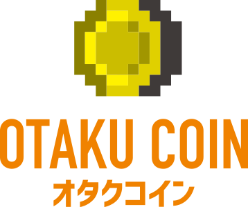
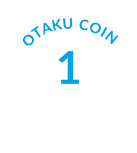
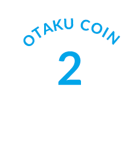
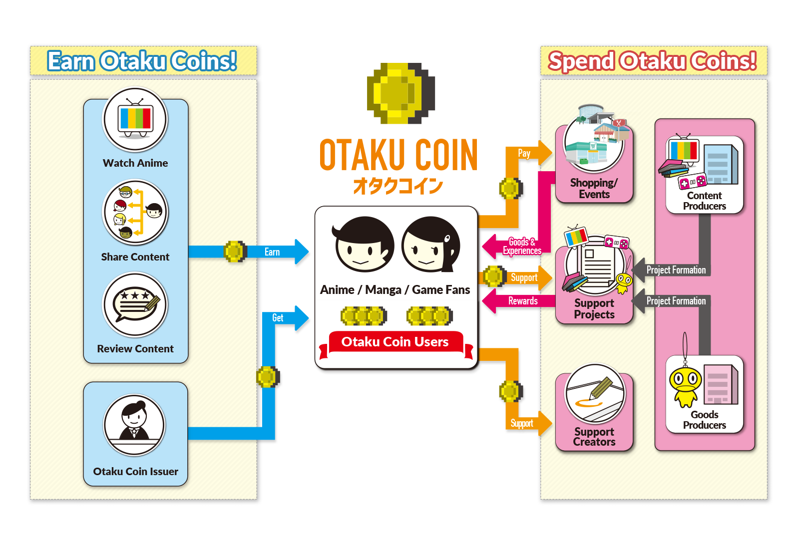
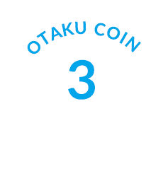
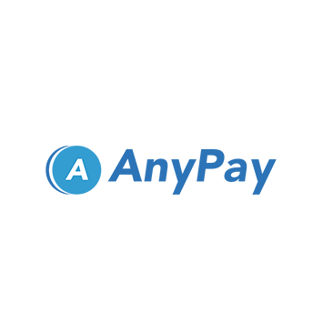

- JP
- EN
For anime, manga, and video game fans around the world
"Otaku Coin" Cryptocurrency ICO
Now Under Consideration

Led by Tokyo Otaku Mode, a company with 20 million fans worldwide
Establishing “Anime Production Committee 2.0” through this cryptocurrency
Interested to know more?
Please enter your email address below to subscribe and receive the latest information about this project.

Introduction
We have developed a vision for the “Otaku Coin” (based on the ERC20 Standard), a new type of cryptocurrency that will circulate throughout the Japanese content industry in the fields of anime, manga, games, and other content that Japan boasts to the rest of the world. At the moment, we are working toward the possibility of launching our ICO (Initial Coin Offering where a new cryptocurrency is provided) in summer 2018.
Utilizing blockchain technology, a new mechanism for democratization, the Otaku Coin could be used to connect fans of the anime industry with creators and relevant organizations in a smart and direct way. The Otaku Coin aims to become the currency of Japanese pop culture, facilitating an ecosystem where fans can more easily help preserve the culture they love.
The main party behind this initiative is the Otaku Coin Preparation Committee consisting of Tokto Otaku Mode (TOM), as well as advisors and partners. While the co-founder and current CEO of TOM will establish the initial framework of the Otaku Coin project, we hypothesize that this initiative will change and develop into a project with decentralized power that matches the fundamentals of blockchain technology.
We have opened this page to introduce Otaku Coin and gather feedback from fans around the world, members of the Japanese content industry, and other relevant organizations to further improve our project. We would greatly appreciate your honest opinions. We are also currently looking for advisers and partners. If you are interested in joining us and moving forward with Otaku Coin, please contact us here.
Please note that this is not equivalent to any type of prospectus or public tender offer. It is not intended for the soliciting of stocks and bonds or encouraging of investments in stocks and bonds. Also, details regarding whether or not this ICO will be launched, how and when it could potentially be launched, and the possibility of offering token sales to Japanese residents have yet to be determined. If this ICO is launched, we intend on designing, promoting, and distributing it in a way that abides all cryptocurrency laws in Japan and around the world.
About Tokyo Otaku Mode
Through its Facebook page with over 20 million likes and its e-commerce site, the Tokyo Otaku Mode Shop, Tokyo Otaku Mode (TOM) delivers the latest news and products from Japanese anime, manga, games, music, and fashion to fans around the world. TOM also designs and distributes original merchandise with creators worldwide to customers in over 130 countries. Using the know-how it has developed in international business, TOM offers services to support overseas business expansions and inbound businesses. For more details, please visit the TOM corporate website.

The World We Want
Our Concept
Enriching the Fan
Experience
- Otaku Coin will offer entertainment that makes being a fan even more exciting
- We aim to make Otaku Coin a new type of currency that doubles as a marker of status within the community
- The creation of Otaku Coin would involve well known artists in the community, with illustrators and musicians all contributing to designing a fun and interactive transaction experience
Managed
by the People
- Our ultimate goal is to have Otaku Coin circulate without our mediation, becoming a currency that thrives by support from the public
- It's main supporters would be the Japanese content community, consisting of content fans around the world, creators, organizations, and other relevant parties
A Community
Currency
- Our goal of this ICO is the widespread use and circulation of the Otaku Coin cryptocurrency
- We aim to make Otaku Coin a cryptocurrency that is used and reused throughout the community of Japanese content around the world and all those involved in the industry
What We Want to Offer
Opportunities to directly
participate in or support
anime production
- We aim to provide financial support to the anime industry so that production committees along with animation studios can keep producing new and high quality content
- We aim to develop a structure through which anime fans around the world can indirectly support creators who are involved in the process of creating new anime
Ways to find quality
content that fans
might have missed
- We want to overcome the current industry hurdle of quality content passing under the fan radar due to the number of series debuting each season
- By creating a platform where fans can find series that match their tastes, we aim to help fans locate amazing content they may have missed before
Assistance in producing
even better content
in the future
- Otaku Coin would be a steady currency for the community not affected by dramatic shifts between global exchange rates
- By seamlessly connecting fans and relevant organizations in the Japanese content industry through Otaku Coin, we hope to help the industry side flourish while contributing to a positive cycle of improved quality of content for consumers
*All information listed above are tentative and under consideration. Timing of implementation is not yet guaranteed.
What fans can do with Otaku Coin

Take a moment to imagine...
A world where fans around the world can visit Japan without exchanging their money for yen. A world where having no lineups for anime events, no need for cash at merchandise booths, and no need to worry about loose change or exchange rates becomes the norm.
Take a moment to imagine...
A world where a fan can use Otaku Coin to support the livelihood of an animator producing an anime they particularly enjoy. With secure living conditions, the animator can focus on producing quality content for fans all over the world who are waiting eagerly.
Take a moment to imagine...
A world where a fan can join the planning phase of anime development and interact with producers, creators, as well as relevant organizations at a deep level. In this world, the fan’s voice can directly reach producers while they plan anime sequels or merchandise.
Take a moment to imagine...
A world where a fan’s regular activities in consuming the content they support or in minor actions - such as sharing a title with a friend - could earn them Otaku Coin. By supporting and contributing to the Japanese content industry, they can earn rewards and use them to purchase merchandise, participate in events, interact with other fans, or make donations to support upcoming series.
Those who are working in the Japanese content industry, take a moment to imagine...
A world where such fan activities can connect directly to the preservation and development of not this cutlure built around your irreplaceable efforts, but also of the entire Japanese content industry. A world where fans can receive appropriate rewards for their activities; where a virtuous cycle in which organizations can continuously support and develop the industry exists.
With the circulation of Otaku Coin, a new cryptocurrency constructed upon the foundation of decentralized authority, we can make this world a reality. Similar projects launched in the past have either been too small in scale or had its efforts too widely dispersed.
The plan we have for the Otaku Coin involves will be democratic and decentralized, utilizing technology that is open and fair to be implemented by all members of the Japanese content industry. Our effort is not intended for the profit-generation of any certain organization. In theory, this mission is one that can gather the strength of all Japanese content industry members. Our collective strength will be capable of breathing new life into the industry as well as contributing to the preservation and development of the culture that Japan boasts to the rest of the world.

About Us
Advisors & Partners
Otaku Coin Preparation Committee Supporters
You
The fact that you have read this far must mean you are already interested in our project! In order to popularize Otaku Coin, we believe that power and control must be decentralized instead of being held by a single organization within our community. Information should be openly available, and the community should be managed in a democratic way. Join us and help us make the anime, manga, games and other Japanese content that you enjoy even better! Just letting your friends and colleagues know about our project would be incredibly helpful. We look forward to receiving your support!
If you would like to contact us directly, please feel free to do so through our Facebook group or Telegram. We would love to hear your opinions and feedback.
Adviser / President of GENCO Inc.

Taro Maki
Maki was born in Gifu Prefecture in 1955. After graduating from the School of Law of Waseda University, he joined the Tohokushinsha Film Corporation in 1977. In addition to being involved in buying western movies during the home video era, movie production, and movie distribution, he was also active in anime production with titles including “Patlabor: The Movie” (1989). In 1990, Maki joined Bionia LDC. Using his experience from producing popular anime series such as Tenchi Muyo! (1992), he founded GENCO Inc. in 1997, a company specializing in the planning and production of anime series, which was rare at the time. He continues to serve as the President of GENCO Inc., where he has worked on notable series and titles including Millennium Actress (2002), Honey and Clover (2005), Nodame Cantabile (2007), Sword Art Online (2012), Golden Mosaic (2013), Is It Wrong to Try to Pick Up Girls in a Dungeon? (2015), and In This Corner of the World (2016)*. At the 36th Annual Fujimoto Awards, Maki won a Special Award, the only Japanese award for producers, with In This Corner of the World.
Adviser / Journalist
Tadashi Sudo
Sudo was born in Mexico and raised in Yokohama. He is active in covering, reporting, and writing about animation around the world. He also conducts research on the business of animations. After leaving his position in a stock company, he created the information website “Anime! Anime!” in 2004, which became one of the most famous of its kind in Japan. In 2009, he created “Anime! Anime! Biz,” a website with information about the business of animations, and served as the editor. In 2012, Sudo transferred the websites he was managing to IID, Inc. In July 2017, he left “Anime! Anime!” and began to work independently. Some of his most notable works include the animation section of “Digital Content White paper,” “Anime Industry Report” which he composed himself, and “Who’s going to create anime from now on? A silent revolution caused by Chinese capital and online distribution” (Seikaisha Shinsho).
Advisor / Partner

AnyPay Inc.
AnyPay Inc. was established in June 2016 by Shinji Kitamura, the company representative and the serial entrepreneur who led Atlantis and Gunosy to their establishment. Its mission is to “realize a society enveloped by technology.” AnyPay Inc. has released the bill-splitting app “paymo” and the payment service “paymo biz”. With its business developments in FinTech and the investment expertise of Kitamura in cryptocurrencies, AnyPay Inc. launched its ICO consulting service in September 2017, which has helped companies around the world such as Bread and Drivezy.
The most popular anime in the company is currently SHIROBAKO.
Virtual Idol / Otaku Coin Ambassador
Kizuna Ai
Kizuna Ai is a virtual YouTuber who uploads videos from a white space almost daily, and has drawn the attention of fans in both Japan and around the world. Her channel has over one million subscribers and over 55 million views. Her dream is to become the world’s number one YouTuber. Her interests include egosurfing and interacting with human beings. She recently celebrated her first anniversary since she began releasing videos on December 1, 2016. Her direct way of speaking and abundance of emotions conveys a humanity atypical of "AI" personas.
Team Members
Tokyo Otaku Mode Inc.
Co-Founder / Chairman
Tomohide Kamei
Kamei was born in Kyoto in 1977. After graduating from college, he joined Cyber Communications Inc. He was transferred to NTT Advertising Inc. and then again to CGM Marketing Inc., a subsidiary of Digital Garage. In April 2012, Kamei co-founded Tokyo Otaku Mode Inc. in Delaware, U.S., and served as the CEO. In the same month, he also participated in 500 Startups, a seed accelerator program in the United States. Kamei has served as the chairman of Tokyo Otaku Mode Inc. since October 2016.
Tokyo Otaku Mode Inc.
Co-Founder / CEO
Naomitsu Kodaka
Kodaka joined the Merrill Lynch & Co., Inc. Investment Banking Division in 2000 where he was involved in many corporate projects including the Dentsu IPO, Sony Corporation’s issuance of convertible bonds, and Taisei Kasai’s reorganization plan (now integrated into Sompo Holdings, Inc.).
He then joined GaiaX Co. Ltd., where he oversaw capital strategy, human resources, and corporate planning as CFO. Working also as a representative of international business development, he led the establishment of subsidiaries in the Philippines and Singapore. In 2011, he became a member of the Ministry of Health, Labour and Welfare’s committee for “Propulsive Committee of Best Practice compatible with Work and Life.”
In 2012, Kodaka joined the 500 Startups program in the United States as a co-founder of Tokyo Otaku Mode (TOM), serving as a presenter on Demo Day. In 2014, TOM received an investment from Cool Japan Fund as part of the fund’s first investment project. In 2015, TOM entered the Chinese market by opening its store on Tmall Global. Kodaka has served as co-founder and CEO of TOM since October 2016.
Kodaka’s favorite manga is Kingdom.
Tokyo Otaku Mode Inc.
Co-Founder / COO
Hajime Ataka
Ataka started out as a game guide writer, participating in over 30 guide books for games such as Derby Stallion and Final Fantasy. He also developed a real-time Q&A service in November 2009. The service was incorporated in November 2011 and bought out in December 2011 in the form of a business divestment. He then joined other founders to start Tokyo Otaku Mode, participating as the company’s co-founder in the seed accelerator program 500 Startups in the United States. He currently oversees business development and general operations, including all e-commerce operations.
Ataka’s favorite anime is Sound! Euphonium.
Tokyo Otaku Mode Inc.
Co-Founder / CTO
Masashi Sekine
In 2004, Sekine joined Hikaku.com Corporation, a company that operates a comprehensive comparison website. As the head of engineering development, he established more than 20 comparison services related to travel, investment, and more. In 2006, the company was listed on the Tokyo Stock Exchange Mothers Index.
He then joined an IT startup of SBI Holdings Group as the mobile SNS development manager. In 2009, he started a company specialized in mobile and cloud services. While developing and operating a mobile-based Twitter client tool with over 300,000 users, he joined the 500 Startups program in 2012 and joined Tokyo Otaku Mode as a result.
Sekine’s favorite manga is Yotsubato!
More project participants still to come
We would love to receive honest opinions and feedback from fans around the world and those involved in the Japanese content industry. We are also currently looking for individuals and organizations to join us. If you are interested in our project and are an industry member or part of an organization involved in anime, manga, games, and other forms of Japanese content, please contact us here.
Please also share your opinions and feedback with us through our Facebook group or Telegram!